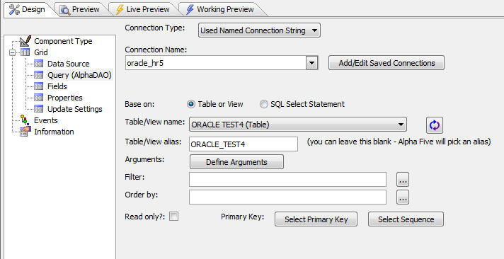
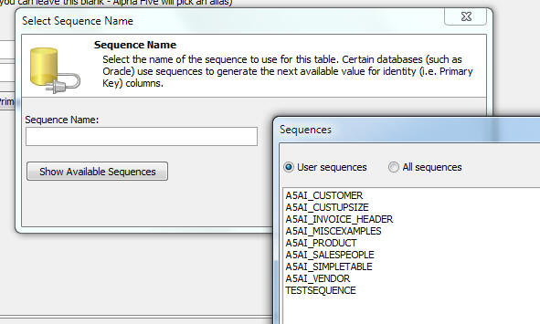

Grid Components - Sequences
The Grid Component now fully supports the use of 'sequences'. Some databases, such as Oracle, implement auto-increment fields through the use of 'sequences'. A 'sequence' is an object that is used to get the next number for an auto-increment field when a record is inserted. In order to use a sequence to generate the ID values for an auto-increment field, you need to tell the Grid component what the name is of the sequence to use.
NOTE: If the Oracle table was created by exporting a table with an auto-increment field from Alpha Five, the Grid component will automatically know about the associated sequence. That's because when a table is exported from Alpha Five to Oracle, a sequence is automatically created with this name 'a5ai_<tablename>'.
To specify that the primary key field in a table is associated with a sequence, click the 'Select Sequence' button.

The 'Select Sequence Name' dialog is then displayed. If you are connected to an Oracle database, the 'Show Available Sequences' button will appear on the dialog. The list of sequences can be filtered on those owned by the current logged in user, or all sequences.

If you have the SQL Trace feature turned on, and you insert a record into a table, you will notice that the Grid automatically switches from Portable SQL to Native SQL in order to support sequences.